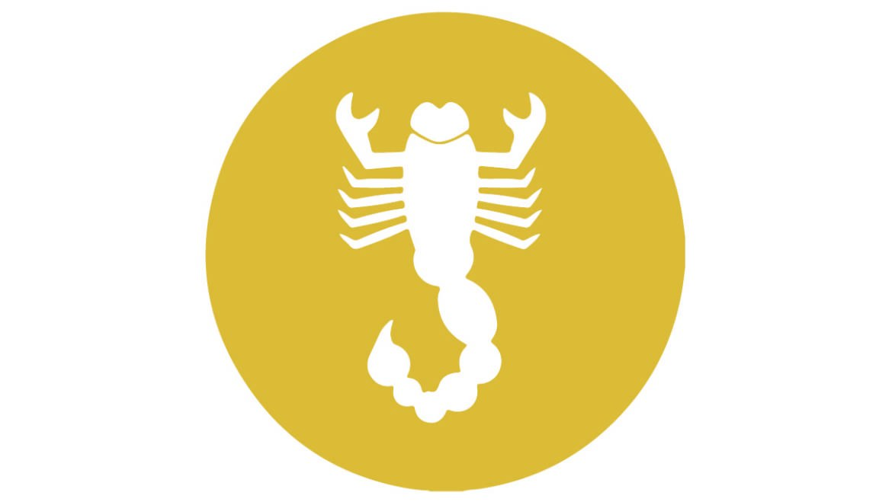

MUĞLA DELTA İLAÇLAMA
Akrep
Muğla Delta İlaçlama

Akrep
Akrep , örümceğimsiler sınıfının Scorpiones takımını oluşturan genellikle sıcak ve nemli bölgelerde yaşayan, vücutları sert kitin bir tabaka ile örtülü, kıvrık ve kalkık kuyruğunda zehir iğnesi bulunan eklembacaklılara verilen ad.
2009 yılı rakamlarına göre akreplerin yaşayan 1753 türü bulunur. Türkiye’de 11 cinste toplanan 23 türü bulunur. Dünyanın en uzun birinci akrebi 23 cm boyuyla Heterometrus swammerdami , ikincisi ise 20 cm boyuyla Pandinus imperator türleridir. Teraryumda bakılan bazı akrepler 8 yıla kadar yaşasa da, doğada ömürleri bundan daha kısadır.
Akrepler, araknoloji bilim dalı içerisinde araknologlar tarafından incelenir.
Habitat
Karlı bölgeler hariç hemen hemen her yerde, ormanlık bölgelerde, çöllerde, taşlık ve kayalık yerlerde yaşarlar. Genellikle tropikal ve tropik altı iklim kuşaklarında yaygındır. Akrepler fazla sıcaklığa duyarlı ve neme bağımlı olduklarından her zaman ılık ve ıslak bölgeleri tercih ederler. Gündüz, taşların altında, duvar yarıklarında, kurumuş ağaç kabukları altında ya da yer altında kazdıkları dehlizlerde rastlamak mümkündür. Geceleri aktiftir. Kaygan yüzeylere tırmanamaz.
Habitatına göre akrep sınıflandırması:
• Topraküstü akrepleri Ağaç akrepleri ( arboreal akrepler ) : Ağaç yarıklarında ve ağaçların kabukları arasında bulunurlar. Avustralya’da Liocheles australiensis türünden akrepler bir kozalıklı ağaç türünün ( Araucaria huntsteinii ) 40 m üstünde yaşarlar. Taşaltı akrepleri ( litofilik akrepler ) : Taş altlarında kaya yarıklarında yaşarlar.
• Toprakaltı akrepleri Kumcul akrepler ( psammofil akrepler ) : Çöl gibi yumuşak kumlu ortamlarda yaşarlar ve geniş tarsal tırnaklar ile birçok sert uzun kıl ( macro-setae ) taşırlar. Uroplectes , Opistophtalmus ve Parabuthus cinslerinden akrepler bu gruptandır. Kazıcı akrepler ( fossorial akrepler ) : Yengeç benzeri geniş chela bulunur. Kısa sert ve kuvvetli bacaklara sahiptir. Cheloctonus , Karasbergia ve Lisposoma cinslerinden akrepler kazıcıdr.
Morfoloji ve Fizyoloji
Karakteristik yapıları ile çok kolay tanınan ve uzunlukları 13–220 mm arasında değişen eklembacaklılardır. Yaşadıkları ortama göre saman renginden sarıya, açık kahverenginden siyaha kadar değişen tonlarda renklere sahiptir. Sırttan ve karından ( dorso-ventral ) basık olup vücutları, başlıgöğüs ve karın olmak üzere iki bölümden oluşur.
Başlıgöğüs
Başlıgöğüs ( cephalothorax ya da prosoma ), “gövde” olarak da nitelendirilir. Baş ile göğsün kaynaşmasıyla oluşmuş tek parça segmentsiz yapıdır. Nispeten kısa, sırt taraftan da tek parça bir zırh ya da baş kalkanı ( karapaks ) denilen kabukla örtülüdür. Bir çift pedipalp, bir çift zehir çengeli ya da keliser ( chelicera ) ve dört çift bacak bulunur. Erkek akreplerin pedipalpleri daha ince yapılı olmasıyla dişilerden ayrılırlar.
Pedipalp
Pedipalp : Başlıgöğsün önünden iki yana doğru uzanan ve bacak ( = kol) gibi görünen bir çift pedipalpleri vardır. Bütün ektsremitelerin en büyüğü ve en kalınıdır. Bunlar, makas formunda adeta eğitilmiş organellerdir. Avlarını yaralamak, yakalamak ve ezmek için bu organelleri kullanırlar. Ayrıca dokunum organı görevi de görürler. Pedipalplerin üzerinde havadaki titreşimleri algılayan ve trichobothrium olarak adlandırılan küçük duyu tüyleri bulunur. Trichobotrium’un alt kısmı fincan gibi ve ince uzun tek bir tüy bulunmaktadır. Pedipalpler, coxa , trochanter , femur , patella , tibia ve tarsus olmak üzere beş bölümden oluşur. Kalça ( coxa ), başlıgöğse eklenmiş pedipalpin ilk proksimal segmentidir. Uyluk bileziği ( trochanter ), coxa ile femur arasında ikinci segment olup kısadır. Uyluk ( femur ), trochanter ile patella arasında uzun ve silindirik üçüncü segmenttir. Baldır ( tibia ) kısmında dikenlere benzer oluşumlar bulunur. Pedipalplerin kıskaçlı dördüncü ve beşinci segmentine kıskaç ya da makas ( chela ) denir. Chela ’ yı oluşturan bu kıskaçların üst bölümü sabit, alt kısmı ise hareketlidir. Hareketli veya eklemli parmağı olan dördüncü segment tarsus olup büyük ve çok net bir şekilde görülür. Kıskaçların şekli türlere göre değişiklik gösterir. Buthidae familyasında tarsuslar tipik sıralı dişlerle doludurlar. Akreplere özgü olarak tarsusda abduksiyon kas bulunmaz. Tarsusun açılması, başlıgöğsün dorso-ventral yönde kontraksiyonu ve buna bağlı olarak hidrostatik basıncın artmasıyla gerçekleşir. Tibia, beşinci ve son segment olup sabit, hareketsiz kalın kısımdır.
Keliser
Keliser ( chelicera ) : Pedipalplerin hemen ventralinde yeralan ve onlara oranla çok daha küçük olan başlıgöğsün ilk çift ekstremitesidir. Coxa , tibia ve tarsus olmak üzere üç segmentten oluşmuştur. Genelde pençe tırnaklı çeneler halindedirler. Familyasına bağlı olarak değişkenlik gösterir. Son iki segment ( tarsus ve tibia ) hareketli parmak ( tarsus ) ve sabit parmak ( tibia ) tarzında kıskaçlı bir makas oluşturacak şekilde birbirlerine eklemlidir. Bunlardan birinin çevresi sarılmış gibidir ve karapaks sınırı ile örtülüdür. İkinci segment biraz daha uzun olup üst kısmı dışa doğru konvekstir (dışbükey). İç yüzünde ise ince dikenimsi kıllarla ( setea ) kaplı yakalama işlemine yarayan dişe benzer oluşumlar vardır. Üçüncü segment hareket edebilen parçadır. Bu parça yakalama işlemi için ikinci makası taşıyan segment ( coxa ) olarak ifade edilir. Bu kısım eğilip bükülür ve avını emmeden önce yakalamaya yarar. Fakat iki nokta arasındaki uzaklık nedeniyle dinlenme esnasında sabittirler. Bu parçalardaki dişler sınıflandırmada dikkate alınır. Zehir çengelleri, avlarını tutmaya ve bazen de birbirlerine sürtülmek suretiyle ses çıkarmaya yararlar.
Bacak
Bacak : Her göğüs halkasında bir çift olmak üzere dört çift bacak vardır. Geniş bir coxa ile başlayan bacaklar yedi eklemlidir: coxa , trochanter , femur , patella , tibia , basitarsus ve telotarsus . Bacakların en uçtaki tarsal segmentinde tırnaklar (vantuz) bulunur. segmentler ince membranla birbirlerine bağlanırlar. Bacaklar, birbirlerine yakın olarak başlıgöğsün alt kısmından çıkarlar. En küçük olan birinci coxa , ikinci coxa ’ nın köşeleri arasında yer alır. En uzun coxa , dördüncü coxa ’dır. Başlıgöğsün ventral yüzeyinde birinci ve ikinci coxa ’ da kitinli plaklar ve salgı bezleri vardır. Bu oluşumların sindirim olayında önemli görev yaptıkları düşünülmektedir. Akrep yürüdüğünde tarsus ile son iki segment ağırlığı çeker. Bacakları, hareket ve kazma organı olarak kullanırlar. Dişi akrepler bacaklarını yavruların hareket etmesinde kullanırlar. Bacaklar üzerinde yerdeki titreşimleri algılamaya yarayan ince tüyler bulunmaktadır.
Gözler
Gözler : Akrepler, karapaks üzerinde bir çift basit median göz ve her biri lateralde bulunan iki ile beş çift arası bir grup küçük göz taşırlar. Median gözler , genellikle aynı yönde alttaki oküler tümsek üzerinde karapaksın anterior sınırından sonra, birlikte yerleşim gösteririler. Median gözler, iki tabakadan oluşmuştur. Lateral gözler , karapaksın ön kısmında köşelerde bulunur. Eşit büyüklükte beş, dört, üç ve iki küçük osellerin grup halinde birleşmesi sonucu oluşmuştur. Bazı türlerde bu gözler körelmiştir. Bazı mağara ve mesken türleri ( Sotanochactas elliotti ) gözsüz de olabilir. Göz sayısı ve dağılımı tür ayrımında değerlendirilir.
Karın
Karın ( abdomen ya da opisthosoma ) : preabdomen (ya da mesosoma ) ve postabdomen (ya da metasoma ) olarak iki bölüme ayrılır. Ovaryum içinde gelişmenin ilk döneminde, sekiz segmetli olan preabdomen ilk yedi segmentinde, sonradan kaybolan ekstremite taslaklarına sahiptir. Küçük taslaklar halinde beliren abdomen ekstremiteleri sonradan kaybolduklarından yetişkin hayvanlarda preabdomen ve postabdomen tamamen ekstremitesizdir.
Preabdomen
Preabdomen : Genelde “ karın ” kelimesi daha çok bu bölüm için kullanılır. Başlıgöğse bütün genişliğiyle bağlanan preabdomen yedi geniş halka segmentten oluşur. Bu segmentlerin sırt taraflarında tergit , karın taraflarında sternit adı verilen kitin plak bulunur. Preabdomenin birinci segmenti dar sternitlidir. Bu sternitin ortasında, serbest kenarı yuvarlak ve ortası yarık olan eşey kapağı ( genital operculum ) bulunur. İkinci sternit üzerinde dokunum ve iz bulma görevi yapan bir çift tarak ( pecten ) organı, 3, 4, 5 ve 6. halkalarda “kitap trakeleri” adını alan solunum organına ait birer çift olmak üzere toplam dört çift solunum deliği ( stigma ) vardır.
Postabdomen
Kuyruk ya da postabdomen : Halka biçiminde 6 segmentten oluşur. İlk beş segmentin her biri tek parça kitin zırhla örtülüdür. Birçoğunda ince olan bu 5 segment, Androctonus cinsinde belirgin biçimde kalındır. Postabdomen halkaları, preabdomen halkalarına oranla daha incedir. Kuyruk halkaları ( postabdomen ) zehir kesesi hariç aynı kalınlıktadır. Postabdomen, dinlenme sırasında yana doğru kıvrık durur. Yürüme sırasında arkaya uzanır. Sokma anında ise, herkesçe bilinen klasik akrep görüntüsüne uygun olarak , kuyruk tamamen yay biçiminde ve üstten olmak üzere başlıgöğse doğru kıvrıktır. Postabdomenin en son halkasında armuda benzeyen zehir kesesi ( telson ) ve zehir kesesinin ucunda kıvrık duran bir de zehir iğnesi vardır . Kesenin içinde ayrıca iki tane zehir bezi bulunur. Zehir bezleri birbirinden bağımsız olarak ve birer kanalla iğneye açılırlar. Zehir kesesi aşağı yön hariç her yöne hareket edebilir. Zehir kesesinin ucundaki iğnenin çıkış yeri (terminal, subterminal gibi) türlere göre değişebilmektedir. İçinden bağırsak geçmekte olan telsonun sondan bir önceki halkasında dışkılık son bulmaktadır.
Cinsiyet
Eşey kapağı ( genital operculum ) : Dördüncü çift coxa ’ya yakın ve birinci mesosomal segmentin ( genital segment ) ventral yüzeyinde sternum ile taraklar arasında akreplerin üreme organlarını örten yarık bir kapaktır. Bu kapağın altında, dışarı açılan tek bir genital delik (dişilerde) bulunur. Eşey kapağı farklı ve çeşitli şekildedir. Sadece farklı türde değil aynı türün erkek ve dişisinde de farklılık gösterir. Dişilerde her iki operculum orta çizgi boyunca birleşir. Erkeklerde eşey kapağı genellikle kısmen veya tamamen ayrılmıştır. Erkeklerde konik çiftleşme aygıtı ( papillae genitale ) sternitin altındaki eşey açıklığında bulunur.
Eşey organları : Abdomenin birinci mesosomal segmenti üzerinde bulunur.
Erkeklerde bir çift testis vardır. Testislerin şekilleri değişkenlik gösterebilir. Her iki testis bir çapraz bağ ile birleşir. Testislere ait sperm kanalları birleştiğinden bir tek eşey deliği bulunur. Spermaları iplik şeklindedir.
Dişi üreme organları ağ şeklinde ve parçalanmamıştır. Preabdomende ortabarsak bezleri arasına gömülmüş bir tek ovaryum bulunur. Ovaryumun biri ortada ikisi de yanlarda uzanan üç boru ile bu boruları bir ip merdiveni gibi birbirlerine bağlayan beş çift enine borucuktan oluşmuştur. Boru ve borucukların alt taraflarında küçük küreler şeklinde olgun yumurta fölikülleri görülür. Yumurtaların yapısı ve gelişmeleri, folikülleri ve yumurta kanalları gruplara göre değişkenlik gösterir. Birçok akrepte yumurtaların gelişimi ve büyümesi over duvarlarında olur. Yumurtalar özel uzama keselerinde döllenirler. Oviduktlar, sperm hazinesi meydana getirmek üzere genişledikten sonra birleşerek, genital operkülün altında bulunan bir tek delikle dışarı açılır. Akrepler canlı olarak yavruladıkları (vivipar) için gelişme ovaryumun içinde geçer.
Tarak
Tarak ( pektines ) : İkinci sternitin üzerinde ekstremitelerin değişmesiyle meydana gelmiş genital deliğin ön tarafında bir çift tarak yer alır. Bu tarağımsı yapı akreplere özgü morfolojik bir özelliktir. Her bir tarak bir sap kısmı ile bu sapın üzerine sıra ile dizilmiş dişlerden oluşmuştur. Pektin üç parçadan oluşmuştur; proksimal parça en uzunu, orta parça ise an kısasıdır. Bu tarakların kemoreseptör olarak çiftleşmede rol aldığı ve yüzey titreşimlerini algılayarak mekano-reseptör olarak görev yaptığı sanılmaktadır. Her iki cinste de bulunan taraklar, erkeklerde daha geniş olup daha fazla sayıda küçük diş taşırlar. Yörüklerin kıl keçeden yapılma çadırlarında, keçenin tüyleri akrebin hassas tarak organına itici etki yaptığından, akrepten korunma malzemesi olarak keçenin adı geçer.
Sternum
Sternum : Üçüncü ve dördüncü coxa arasındaki çok küçük plaklardan oluşur. Bazı cinslerin sternum, kitinin eni dar şeritler halinde dizilmesi ile oluşmaktadır. Bazılarında bir küçük üçgen plak ve geri kalan kısmında ise bütün genç bireylerde olduğu gibi beşgen şekildedir. Sternumun şekli familyaların tanımlanmasında önemlidir. Buthidae familyasında boyu eninden fazla, üçgen şeklinde ve öne doğru oldukça daralmıştır. Chactidae familyasında boyu ekseriya genişliğinden uzun değildir. Bothriuridae familyasında çok belirgin olmasa bile iki ayrı parçalıdır. Sternumu oldukça geniş ve belirgindir. Scorpionidae familyasında genellikle beş köşeli, yan kenarları birbirine paralel ve boyu eninin yarısı kadardır.
Sistemler
Sindirim sistemi
Pedipalpler ile 1. ve 2. yürüme bacaklarının dip parçaları arasında, atriyumun içinde ve bir üst dudağın altında çok küçük ağız bulunur. Emici yutaktan sonra içerisine tükürük bezleri açılmış kısa yemek borusu gelir. Median hatta dar ve uzun bir orta bağırsak bulunur. Orta bağırsak boyunca uzanan büyük bir bezden ayrılan beş çift kanal orta barsağa açılır. Son bağırsak kısadır. Akrepler böcek, örümcek, çıyan, kırkayak, tespih böceği ve bazen de küçük kemirgenlerle beslenirler. Pedipalpleriyle avlarını canlı halde yaralayarak, yakalar ve ezerler. Birinci ve ikinci yürüme bacaklarının başlıgöğse bağlandığı yerde çiğneyici eklentiler arasında ezilir, sonra da yutak vasıtasıyla emilir.
Boşaltım sistemi
Boşaltım organları Malpighi tüpleri ve koksa bezleridir. Malpighi türleri nin sayısı bir veya iki çift olabilir. Bunlar preabdomenin son segmenti içinde bulunur ve orta bağırsağın son kısmına açılırlar. Koksa bezleri bir çift olup başlıgöğüste diyaframın hemen önünde yer alırlar. Bu bezlerde bir başlangıç kesesi ile bir toplama kanalı ve bir de bu kanalın son kısmını oluşturan, boşaltım kanalı ayırt edilir. Boşaltım kanalları üçüncü yürüme bacaklarının diplerinden dışarı açılır.
Dolaşım sistemi
Akrepler, örümceğimsiler sınıfı içinde dolaşım sistemleri en iyi gelişmiş olan eklembacaklılardır. Dolaşım sistemi; kalp, kan damarları, sinüslerden meydana gelmiştir. Kalp, sırt tarafta bütün karın ( preabdomen ) boyunca 7. segmentten 13. segmente kadar uzanan sekiz çift ostiyumlu bir boru biçimindedir. Ön ve arka uçlarından ayrılan birer büyük aorttan başka yanlarından da yedi çift arter çıkar. Ön aortta birçok kanallara bölünür. Bu kanallardan ikisi yemek borusunun yanlarından aşağı inerek, karın sinir sisteminin yanlarından, arkaya uzanır. Kan renksizdir. Lenf sıvısı yoğun granüllü yuvarlak kan hücreleri ile granülsüz ve merkezi olmayan nükleuslu lökositleri içerir. Kontraksiyonda kan, kalp tarafından altı ön damardan aorta cephalica içine itilir. Arterlerin hepsi vena lakünlerinde sonlanır. Lakünlerin içindeki kan, karın tarafta bir sinüste toplandıktan sonra solunum organlarına gider. Burada temizlenir ve perikard boşluğuna geri döner.
Sinir sistemi
Sinir sistemleri; iki loplu bir beyin ile büyük bir göğüs gangliyonu kitlesi ve 7 – 8 karın gangliyonundan oluşmuştur. Karın ( abdomen ) gangliyonlarından son dördü post abdomende bulunur. Yemek borusunun başlangıç kısmında da küçük bir gangliyon vardır. Sinirlerle beyne bağlı olan bu gangliyondan sindirim borusuna giden ve viseral sinir sistemini oluşturan sinirler ayrılır. Ayrıca, vücudun ön kısmındaki yutak gangliyonundan çıkan, lateral ve ana gözler ile mandibulalara bağlanan sinirler bulunur.
Solunum sistemi
Akreplerde solunum organları preabdomen ’in 3. – 6. sternitlerinde, eliptikal veya sirkular açılımlı dört parçadan ibaret kitap trakeleridir. Kitap trakeleri , vücudun orta kısmının ventral yüzünde bulunurlar; ince kütikula tabakasından oluşan yüzü ve iki akciğer boşluğunun iç yüzleri farklı kalınlıktadır. Akreplerin değişik gruplarında farklı amaçlar ve özellikler gösterirler. Bu yüzden sistematikte önemleri çok büyüktür. Ayrıca kitap trakelerine ait birer çift solunum deliği ( stigma ) vardır. Bunlar yelpaze şeklinde olup ana solunum organına bağlıdırlar. 5. ve 6. halkalarda stigma yoktur. Stigmaların her biri ayrı olarak vücut boşluğuna açılır.
Salgı sistemi
Akreplerin salgı sistemleri koksa bezleri ile lymphatik ve lymphoid bezlerden oluşur. Koksa bezleri , üçüncü yürüme bacaklarının vücuda bağlandığı yerde bulunur. Lymphatik bezler ; tam halka, yarım halka ve küçük oval olmak üzere üç şekilde görülür. Lymphoid bezler bir çifttir. İki kısa keseden oluşmuş olup ön uçları ile diyaframa bağlanmışlardır. Vücut boşluğu içinde serbest olarak sallanır. Lymphatik ve lymphoid bezlerin salgıları, akrebin vücudundaki yabancı maddeleri absorbe etme ve bakterileri de zararsız hale getirme özelliğindedirler.
Duyu sistemi
Duyu organı olarak dokunum tüyleri, bacaklardaki ince tüyler, abdomenin ikinci sternitindeki taraklar ve başlıgöğüsteki median ve lateral gözlerdir. Akrepler yürürken etrafı kollamak üzere pedipalplerini biraz yukarıda tutarlar. Pedipalplerin üzerinde bulunan küçük duyu tüyleri ( trichobothrium ) ile havadaki titreşimleri algılar. İkinci sternitin ve eşey açıklığının ön tarafında bulunan taraklar yüzeydeki, bacaklar üzerinde bulunan ince tüyler ise yerdeki titreşimleri algılar.
Üreme ve yaşam döngüsü
Çiftleşme
İlkbaharda çok kısa bir dönemde erkekler, dişileri arayıp döllemeye çalışırlar. Spermler, genellikle eşey açıklığından dışarı çıkmış durumda bir kese içerisinde bulunurlar. Bu kese içerisindeki spermleri kıskaçları ile alır ve bir dişiyi gördüğü anda onu oyalayarak ya da ansızın yakalayarak, kıskacı ile taşıdığı sperm kesesini dişinin eşey açıklığına yapıştırır. Bu olayı gerçekleştirdikten sonra hemen kaçar. Çiftleşmeleri erkek açısından oldukça tehlikelidir. Akrepler yamyamdır ve çiftleşme teşebbüsü erkeğin dişi tarafından yenmesiyle sonuçlanabilir.
Doğum
Gebelik süreleri yaklaşık 7 – 12 aydır. Her bir dişi akrep 10-60 larva doğurur (vivipar). Genelde yavrular baş önde, kuyruk önde ya da sağ yan geliş pozisyonunda doğarlar. Türüne bağlı olarak yavru sayısı 34 ilâ 110 arasında değişir.
Pro-juvenil
Neonatal veya birinci instar yavruları , doğdukları an akrepten ziyade, toplu beyaz cisimcikler gibidirler. İnce kıskaçlı, bacaklı ve bir kuyruklu büyük sinek kurtçukları gibi görünürler. Annelerinin bacakları yardımıyla sırtlarına tırmanırlar. Anne akrep yavrularını bir süre sırtında taşır. Bu dönem içerisinde annelerinin sırtından düşen yavrular tekrar annelerinin sırtına çıkamazlarsa su kaybı sonucu ölürler. İlk deri (= kabuk) değişimini annelerinin sırtında yaparlar.
Juvenil
Birinci deri değişimini tamamlayan yavrular juvenil olarak kabul edilir. Yenilenen kabuklarıyla pembe renkli görünen ikinci instar yavruları erginlerin minik versiyonları gibidirler. Ancak birkaç gün sonra renkleri giderek grimsi kahverengine dönüşür ve annelerinin sırtında kalmaya devam ederler. Birkaç hafta içerisinde yavrular bulundukları çevreyi keşfetmek için annelerinden ayrılarak kısa geziler yaparlar. Geziden sonra annelerinin pedipalpleri yardımıyla sırtına tekrar çıkarlar. Zamanla kısa geziler uzun gezilere dönüşür. Sırttan inen yavrular yaklaşık 6-7 ay kadar annelerinin arkasında dolaşırlar. Bağımsız hayat sürmeye başladıktan 3-4 yıl sonra yetişkin hâle gelirler. Akreplerin yaşam süreleri 3-8 yıldır. Yetişkin hâle gelinceye kadar 6-9 kere deri (= kabuk) değiştirirler.
Besini
Geceleri aktiftirler. Yırtıcı ve yağmacı tabiatlı olmakla birlikte, avlanmada uzmanlaşmamış ve yemek konusunda titiz olmayan hayvanlardır. Havadan ve yerden gelen titreşimlerle algıladıkları avlarını, peşine düşmek yerine, sabırlı bir şekilde pusuda bekleyerek avlarlar. Başlıca besinleri eklembacaklılar olup, daha çok böcekler, örümcekler ve kırkayaklardır. Ayrıca büyük akrepler, küçük yılanları, kertenkele ve fareleri dahi yiyebilir . Yamyamlık, akreplerde sıklıkla görülmektedir.
Avlarını kıskaçlarıyla yakalayarak sıkan ve kuyruğunu avına uzatarak sokan akrep, zehri ile böcekleri hemen öldürür. Akrepler, ne kadar zehir enjekte edeceklerini avlarına göre belirleyebilir. Büyük kıskaçlara sahip akrepler, küçük avlarını güçlü kıskaçlarını kullanarak öldürürken, ince ve zayıf kıskaçlı akrepler avlarını yakalar, çok etkili zehirlerini kullanarak avı sokar ve felç ederek öldürür. Birinci bacakların altındaki boşlukta bulunan keliserini avına tamamen yerleştirir. Tükürük ve sindirim enzimleri salgılayarak dokuları sıvılaştırıncaya kadar bekler ve oluşan sıvıyı emer.
Soğukkanlı hayvanlar arasında metabolik hızları en düşük hayvanlar olduğu için az yiyecekle yetinebilir ve aylarca hatta iki yıl kadar uzun bir süre açlığa dayanabilirler. Besinlerden aldığı sıvıdan dolayı uzun süre susuz da yaşayabilirler.
İnsan besini olarak kullanımı
Uzakdoğu mutfaklarında insanlar tarafından özellikle kızartılarak yenilir.
Düşmanları
Evcil hayvanlar içinde tavuklar ve kediler akrepleri yer.
Afrika’daki mirketler ( Suricata suricatta ), akrep yakalama ustasıdır. Bilim insanları, mirketlerin akrep gibi tehlikeli hayvanları yemeyi kendi kendilerine öğrenmediklerini, yetişkinler tarafından eğitildiklerini keşfetmişlerdir. [2]
Zehir
Varlığı ve zehirlilikleri çok eski çağlardan beri bilinen akrepler hastalık etkenlerini taşımazlar. Ancak çoğu zaman kendilerini korumak amacıyla, insan ve hayvanları sokarak zehirlenme ve ölümlere neden olabilirler. Akrep zehri, akreplerin telsonlarında bulunan, birçok protein, peptid ve biyolojik yönden etkin bileşiklerden oluşan nörotoksik etkili bir salgı olup, genellikle avını yakalamada ve sindirimde kullanırlar. Yanıcı ağrı, deride kızarıklık, şişlik olur. Kan basıncı yükselebilir veya düşer. Çift görme, bilinç kaybı, ağızdan köpük gelmesi gibi nörolojik belirtiler yaşanabilir. Karın ağrısı, bulantı, kusma olabilir. Kasılma, yerinde duramama, aşırı terleme gelişebilir. Kişi komaya da girebilir. Akrep sokmalarında akrebin zehrinin cinsine göre, vücutta aşırı bir adrenalin salınımı olur ve bu kan damarlarında ani spazma ve pıhtı oluşumuna yol açar. Bu ani değişiklikler de etkiledikleri damara göre kalp krizi, inme gibi acil durumlara neden olabilir. Akrebin cinsi ve zehiriyle bağlantılı olarak kalpte ciddi ritm bozuklukları oluşabilir. Özellikle, bağışıklık sistemi yeterince gelişmemiş olan yenidoğanlar ile küçük çocuklarda ve alerjik bünyeli kişilerde, akrep sokması ( skorpionizm ) ihmal edilmemesi gereken tıbbi vakadır . Akrep zehri, içeriğindeki etkin maddelerin çeşitliliği sebebiyle fizyolojik ve farmakolojik çalışmalarda, araştırma materyali olarak sıkça kullanılmaktadır.
Dünyadaki 1750 akrep türü içinde ancak 50’sinin zehirli, 20-25’inin öldürücü olduğu biliniyor. Türkiye’de ise 19 akrep türünden 8’i zehirlidir. Bu 8 tür arasında 2’sinin çok zehirli ve “ölümcül” olduğuna dikkati çekmek gerekir.
En zehirli akrep türleri arasında şu türler verilebilir:
• Güney Amerika : Tityus serrulatus , Centruroides suffusus
• Orta Doğu ve Kuzey Afrika’da : Androctonus crassicauda , Buthus occitanus
• Güney Afrika’da : Parabuthus granulatus
• Hindistan’da : Mesobuthus tamulus , Palamneus swammerdami
Bizimle iletişime geçin